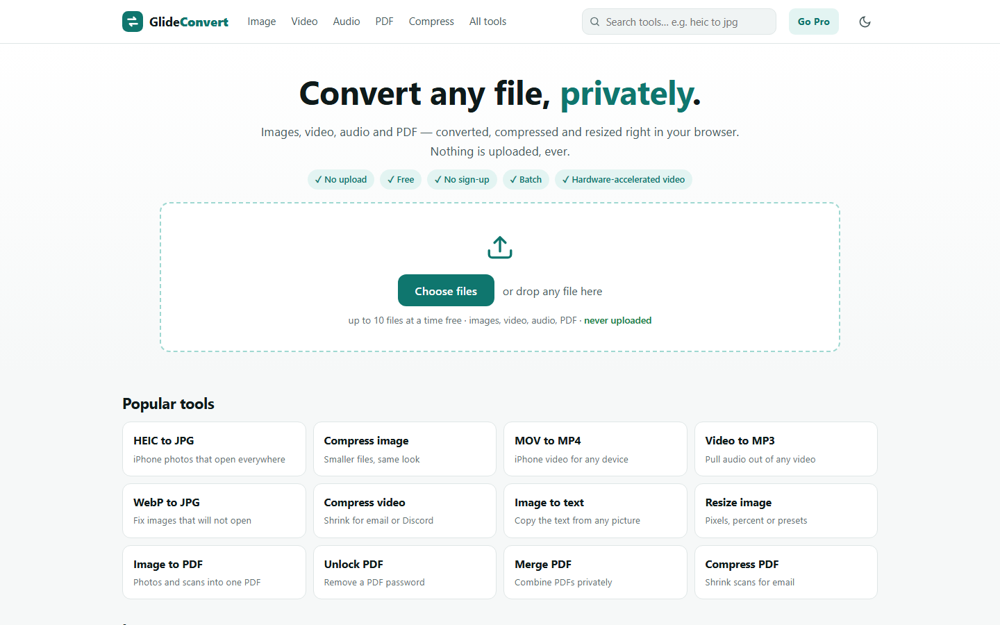

GlideConvert
Сервис конвертации, сжатия и ресайза изображений, видео, аудио и PDF прямо в браузере — файлы не загружаются на сервер. Более 300 инструментов (HEIC→JPG, MOV→MP4, сжатие PDF до заданного размера, снятие пароля с PDF, распознавание текста и др.) на FFmpeg.wasm и собственном PDF-движке. 7 языков и ~2400 SEO-страниц, генерируемых статическим сборщиком, freemium-модель с оплатой криптовалютой.
JavaScript
FFmpeg.wasm
pdf-lib / PDF.js
Node.js
SEO / i18n